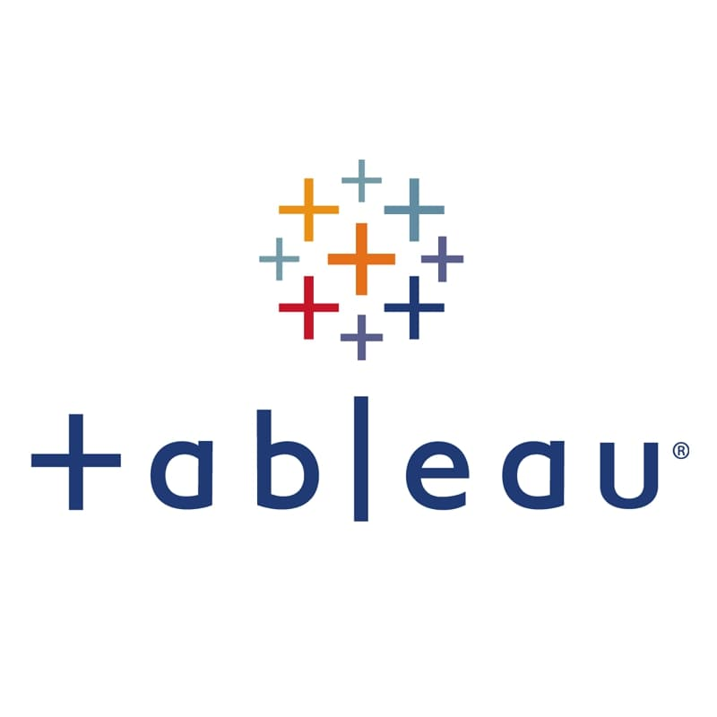
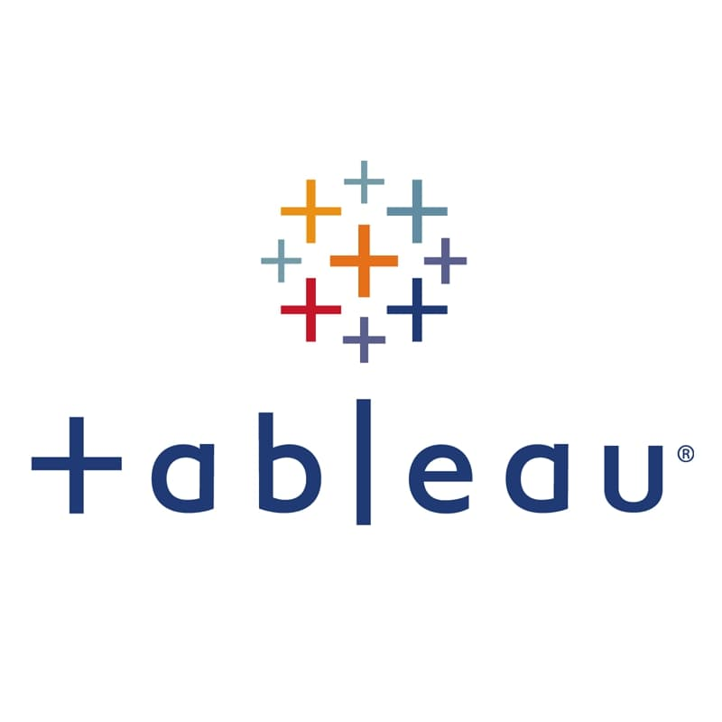
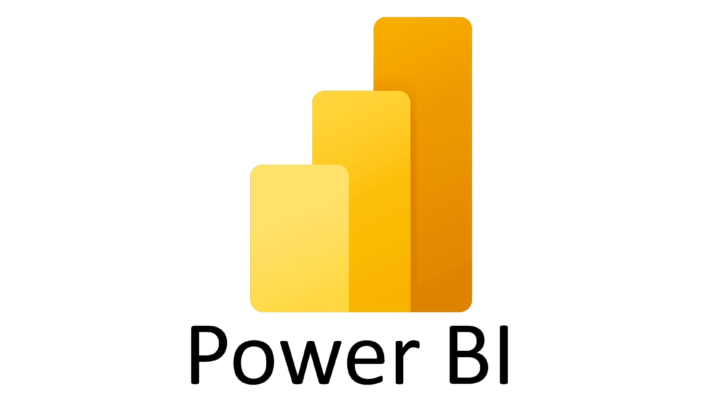
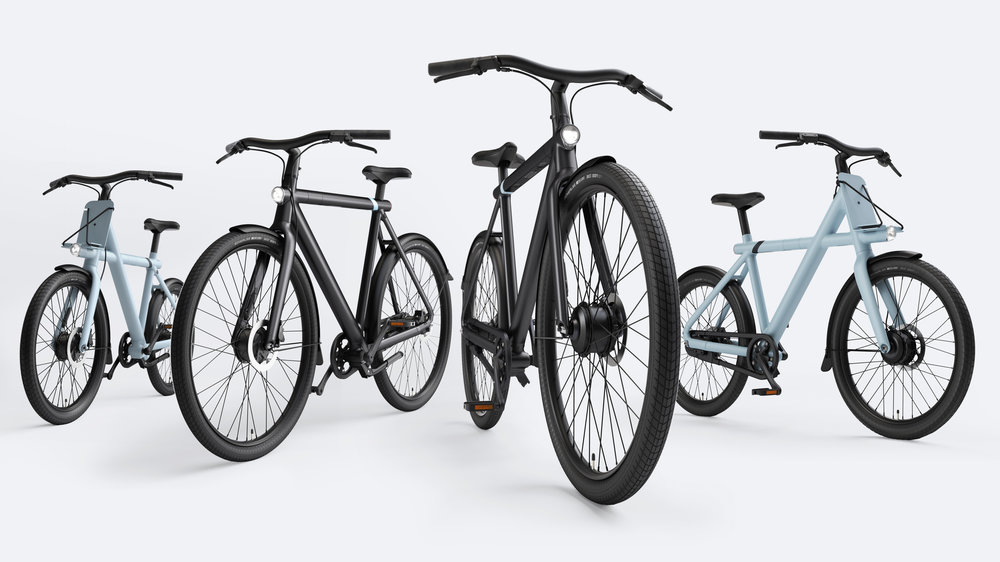

In this project, I cleaned the Nashville Housing dataset using SQL. The dataset contained missing values, duplicate records, and inconsistent data. I used SQL queries to clean the dataset and ensure that the data is consistent and accurate..
 

Welcome to my Tableau Gallery! Here, you'll find a collection of dynamic and insightful dashboards that encapsulate my journey and proficiency in data visualization. From financial analyses to interactive data storytelling, each dashboard reflects my passion for transforming raw data into meaningful insights.
Utilizing Python, I scraped data from the Jumia website to create a personalized dataset. The project includes an automation feature for real-time updates and email notifications based on predefined conditions. This ensures continuous access to the latest information and timely alerts, demonstrating practical application in data-driven environments.

I worked with a survey dataset on data professionals. I used Power BI to clean and transform the data, ensuring its quality and reliability. Once the data was cleaned, I created a dashboard in Power BI to analyze the data.

In this project, I worked with a bike buyer dataset in Excel. The dataset contained missing values and inconsistent data. I used various Excel tools and techniques, such as trimming, filtering, and sorting, to clean the data and ensure its accuracy and consistency.
After cleaning the data, I used pivot tables to analyze and summarize the data and created a dashboard in Excel to visualize the data.

In this project, I explored the COVID-19 dataset using SQL. I analyzed the data to understand the impact of COVID-19 on different countries, regions, and demographics.

Using Python, I leveraged popular data analysis libraries such as pandas, numpy, matplotlib, and seaborn to explore and visualize rollercoaster business data.